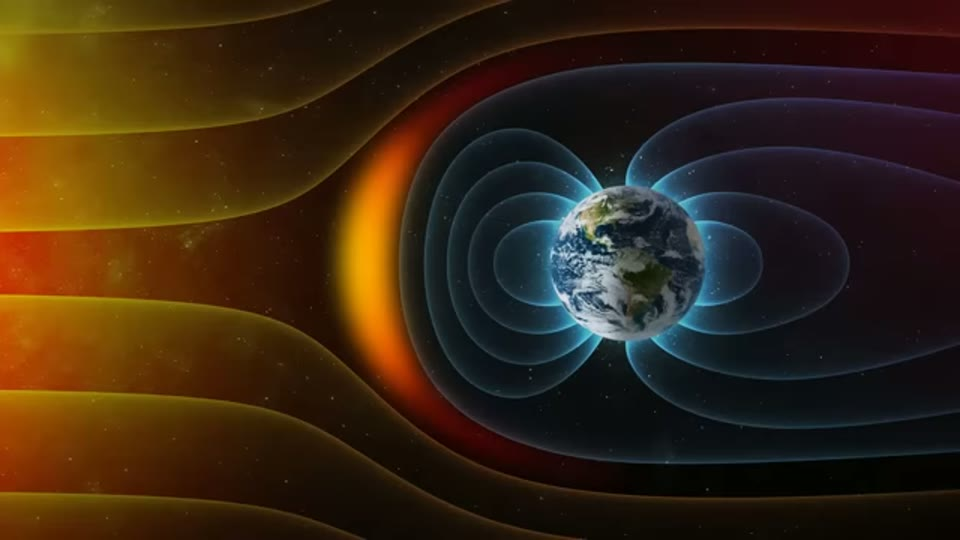

Curious Being
Did Pole Flips and Solar Storms Wipe Out Advanced Prehistoric Civilizations?
Tina · 22 min · watch on YouTube · summarised 2026-09-28
A reply video. The previous one argued that recurring solar micronovae did not reset civilisation every 12,000 years, on three grounds: the Sun is not a white dwarf and cannot go micronova; solar plasma blasts are geomagnetic storms whose damage on the ground falls on modern electrical and communication systems; and genome studies show only one human population bottleneck in the last 500,000 years.
Two objections came back, and this video answers them 00:50–01:23: that the Sun can go micronova, and that she ignored Earth's weakening magnetic field — the claim being that a monster solar blast arriving during a pole flip, with the shield at its weakest, would bring mega earthquakes and tsunamis and end civilisations.
Could we see it if it happened?
01:43–05:56 Her answer is that big solar events are detectable in the record, and they leave no matching destruction.
Miyake events — exceptional solar storms — are identified from abnormal carbon-14 spikes in tree rings together with surges of beryllium-10 and chlorine-36 in ice cores, all dating to the same moments. So the method exists and it works.
What it does not show is any pattern of extinction to go with them. On the 2015 genome study there is one marked human population bottleneck in half a million years, between 20,000 and 15,000 years ago — and the largest Miyake event is at 14,300 years before present, after it. The two do not line up.
She is careful to be fair to the rival catastrophe. The Younger Dryas impact hypothesis, she says, "has credibility, albeit still in dispute", and she lists its evidence: the black mat layer at the Younger Dryas boundary, high-temperature melt glass, nanodiamonds at hundreds of sites, combustion aerosols in ice cores, and a platinum spike reaching South America and Africa. Something damaging happened. It still did not dent the human population.
Extraordinary claims require extraordinary evidence… If true, where is the evidence? Are global human or animal genome declines, sediment layers, fossils, wood rings or ice core data to prove there were solar blasts severe enough to spawn mass destructions — and repeated in a 12,000-year interval?
And the comparison that makes the point: the K–Pg extinction 66 million years ago, which killed 76% of life, left a crater and a worldwide chemical boundary layer. That was sixty-six million years ago and we can still find it. These micronovae are supposed to be within the last tens of thousands of years.
The magnetic field is not about to collapse
05:56–11:13 The claim she is answering: the geomagnetic field has lost 30% of its intensity in 3,000 years and is heading for zero within centuries.
Her reply is that this is one slice of a longer record. Paleomagnetic studies put the present field near the strongest it has been in 100,000 years, and about twice its million-year average. Reversals are common — up to 100 times in the last 20 million years — but each takes one to tens of thousands of years, and the field has to weaken by roughly 90% before one can happen.
The dates: the last full reversal was about 780,000 years ago; the last temporary excursion, the Laschamps, about 41,000 years ago, when the field fell to a minimum of 5% of today's strength. She shows a paleointensity curve for the last 100,000 years and a second figure giving dipole intensity across the last five reversals, and reads off it that reversals are preceded by a steady decline over tens of thousands of years — which is not where we are.
These pole flips clearly don't have a pattern that takes place every 6,000 or 12,000 years.
One source here is fully cited, and it is the one that matters most. Over this passage she shows a report of Yuki Haneda et al., "A full sequence of the Matuyama–Brunhes geomagnetic reversal in the Chiba composite section, Central Japan", Progress in Earth and Planetary Science (2020), with its DOI on screen. The highlighted line: the field "became unstable at least 10,000 years prior to the magnetic direction change 773,000 years ago, and the full reversal process took at least 20,000 years."
That is the whole case against a sudden flip, in one sentence, from a named paper.

How long a geomagnetic reversal actually takes — the figure that kills the sudden-flip catastrophe.
And the test has already been run. Pole excursions last centuries to millennia; the solar cycle is 11 years. So large solar storms certainly did strike Earth during past flips, with the field at 5 to 10% of normal — and there is no sign of worldwide ruin in the record. She quotes Alan Buis of NASA's Jet Propulsion Laboratory at length to the same effect: fossils from the last major reversal "don't show any big changes", deep ocean sediments show glacial activity stable, and "geologic and fossil records from previous reversals show nothing remarkable, such as doomsday events or major extinctions."
She adds the point that localised earthquakes could not destroy a global civilisation anyway, and that there is no evidence of a global-scale earthquake.
The part that goes further than it had to
11:44–17:30 This is the substantial half, and it argues against something most people believe.
Even a badly weakened field still works. The magnetopause — the boundary between Earth's field and the solar wind — normally stands about 10 Earth radii sunward. On paleointensity data for the last 800,000 years, during the last flip it is estimated to have been at 3 Earth radii, which she argues is still plenty.
And if the internal field vanished entirely, the solar wind would make a replacement. Research she cites finds that the solar wind induces a magnetic field in an unmagnetised ionosphere strong enough to shield against cosmic radiation, comparable to having an intact dynamo.
Venus is the demonstration. It has no internal magnetic field, sits nearly twice as close to the Sun as Mars, and holds a dense atmosphere.
Which undermines the Mars story everyone is taught. The standard account is that Mars lost its field, the solar wind stripped its atmosphere by sputtering, and it became cold and dry. She reports that sputtering is "not remotely sufficient to account for Mars's atmospheric loss", and that induced magnetospheres shield both Mars and Venus from it well.
Then the paper that carries the section. A 2018 study found the observed atmospheric mass escape rates from Earth, Mars and Venus are all similar, even though Earth has a far stronger internal field. The reason is that a planetary field cuts two ways: it protects against sputtering and ion pickup, but it also enables polar wind escape, which raises the loss rate. Its conclusion, as she quotes it:
Contrary to what has been believed and reported in the press, the presence of a strong planetary magnetic field does not necessarily protect a planet from losing its atmosphere.
A Harvard researcher is cited for the further possibility that Mars's original field worked quite differently and may even have helped its atmosphere escape.

The boundary her 10-versus-3 Earth radii argument is about.
So what actually protects us is the atmosphere, which absorbs X-rays and gamma rays, burns up small meteors, and stops even powerful gamma rays within tens or hundreds of feet. And what holds the atmosphere, she notes, is gravity — a topic she says she may take up later. Atmospheric loss runs over millions of years, so even total field collapse would leave an advanced civilisation plenty of time to respond.
The real hazard she does accept: with a weaker field, more high-energy particles arrive, and coronal mass ejections can fry satellites and induce currents in power and communication lines, causing regional or global blackouts.
Her own tentative hypothesis
17:30–20:27 Flagged as tentative, and it is speculation.
Field strength is not uniform: it is highest near the poles and weakest at the equator, and the poles attract charged particles, which is why polar regions suffer most in a solar storm and equatorial regions are best shielded. During a reversal the dipole breaks up and multiple weaker poles appear in unexpected places.
Her suggestion is that this might partly compensate — scattered weak poles would dispense incoming particles across many locations instead of concentrating them at two, possibly reducing the severity of any one storm.
What you can check yourself
- Miyake events are real and the method is published: carbon-14 in tree rings with beryllium-10 and chlorine-36 in ice cores, independently dated. The largest is dated to about 14,300 years before present.
- The Younger Dryas boundary evidence she lists — black mat, melt glass, nanodiamonds, combustion aerosols, the platinum spike — is all published, and so is the dispute about it.
- The K–Pg boundary layer is a real global marker, which is the whole force of her comparison.
- Paleointensity records are public. Whether the present field is near its strongest in 100,000 years, and roughly twice the million-year average, is a question the data answers.
- The reversal dates — last full reversal about 780,000 years ago, Laschamps about 41,000 — are standard.
- The magnetopause standoff distance, normally around 10 Earth radii, is measured continuously; the 3 Earth radii figure for the last flip is a published estimate.
- Alan Buis's JPL article is online and can be read in full.
- The 2018 atmospheric escape paper is findable, and its conclusion is the most surprising thing in the video — that Earth, Mars and Venus lose atmosphere at broadly similar rates.
- Venus has no internal magnetic field and a dense atmosphere. That is not in dispute and it is the cleanest single fact in her argument.
What the video does not settle
- The transcript is machine-generated and the proper nouns are unreliable — see below. Nothing here should be quoted without checking the audio.
- One source is cited properly and the rest are not. Haneda et al. appears with a DOI, and Buis is named. The 2018 escape paper, the Miyake literature, the induced-ionosphere research and the Harvard researcher are all "a study", "researchers" or "a paper" — and the escape-rate result, which is the most surprising claim in the video, is narrated over a stock illustration of the solar system.
- The magnetopause argument is made over a picture with no distances on it. Ten Earth radii against three is the point; the image is a CGI magnetosphere carrying no scale.
- Her diffusion hypothesis is not reconciled with the shielding argument she has just made. She marks it as tentative and does not return to it.
- The bottleneck argument uses the same 2015 curve as the collapse video, where the quantity plotted is effective population size rather than a head count. The distinction is not raised here either.
- "Sputtering is not remotely sufficient" is asserted with no source, and no contrary position is reported.
- Two timescales run in the same passage and are not distinguished. Atmospheric loss over millions of years is offered as reassurance; the particle-flux and CME damage to power and communication systems that she concedes operates over hours.
See also
Solar Micronova: Could the Sun Periodically Destroy Civilizations? — the video this one answers objections to.
Flash-Frozen Mammoths — the same NASA passage, the same Laschamps excursion, and the same conclusion that pole flips do not show up as catastrophe.
What Caused the Fall of a Previous Advanced Civilization? — the bottleneck she uses here, and what she builds on it there.
Was an Advanced Civilization Wiped Out by a 12,800-Year-old Comet at Younger Dryas? — her fuller treatment of the impact hypothesis she treats fairly here.
What we have not checked
- This transcript is machine-generated, and the channel appears to have uploaded the automatic track as its own captions, so the upgrade tool cannot improve it. Corrected from context: Miyake events ("Miaki"), beryllium-10 ("barelan 10"), tree rings ("treay ranks"), Laschamps ("lasham"), magnetopause ("magnopus"), Alan Buis ("alus"), sputtering ("spattering"), fossils ("fuzzles"), millennia ("Melania"), multiple poles ("modable pose", "jungo mle pole"), ferocity ("verocity").
- The K–Pg boundary is described as a band containing "much more uranium than other bands". The element that marks that boundary is iridium, and it is the whole reason the layer is evidence of an impact — iridium is rare in the crust and common in asteroids. Uranium is not the marker and never has been. What cannot be settled here is whose error it is: the transcript is machine-generated, and the frame running under the sentence is an outcrop photograph labelled "K-Pg Boundary" with a pocket knife for scale and no element named on it. So the geology is certain and the attribution is not.
- No source in this video has been located or read.